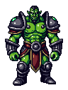
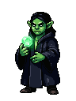
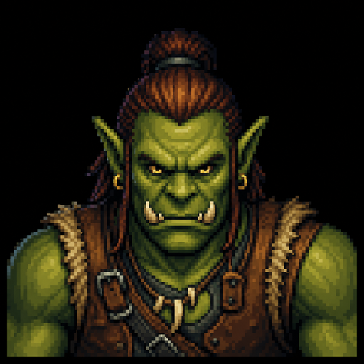
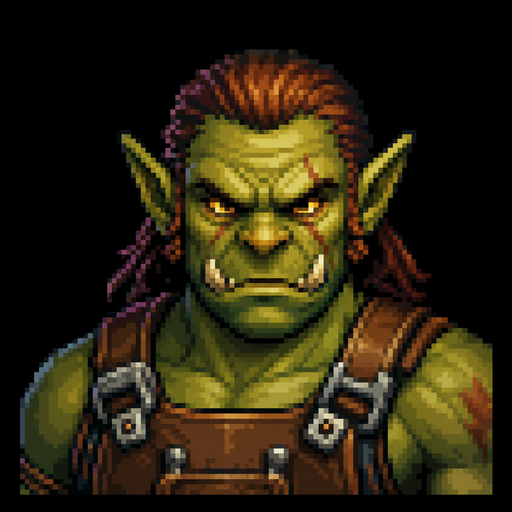
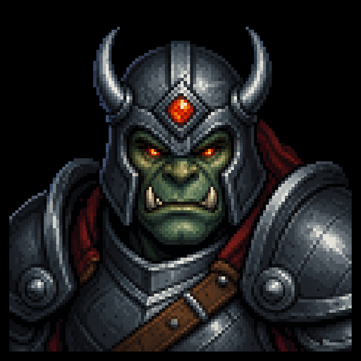

Warchief's Council8 Agents · Loop 2

Investigation Planner조사 설계관done
subclaim 8개 분해 · known/gap 라벨 부착
opus-4-8 · 고성능·reasoning

Graph Explorer지도 탐색관done
War Table subgraph 조회 · read-only · 관계 경로 3
sonnet-5 · 중급

Retrieval Agent수색대done
hybrid 검색 · 후보 span 12건 반환 (문서 아님)
sonnet-5 · 중급

Evidence Extractor증언 채록관running
span → claim/evidence 후보 추출 · strict JSON · batch
sonnet-5 · 중급·batch
Counter-Evidence반증 심문관running
반대 가설·부정 검색질의 생성 · 모순 후보 판정
opus-4-8 · 고성능·reasoning

Source Independence Judge출처 독립성 판관idle
복제본 → 독립 근거 수 보정 · root/derived 분해
opus-4-8 · 고성능
Synthesis Agent종합 서기관idle
검증 subgraph 확정 후에만 문장 생성 · 사실/주장/추론/예측 구분
opus-4-8 · 고성능·reasoning
Audit Agent감사관idle
문장 → claim+source span 역추적 · 무출처 문장 차단
sonnet-5 + deterministic 검증
조사 루프 · Investigation Loopsubclaim-3 · step-014
계획 수립plansubgraph 조회retrieve subgraph공백 식별identify gaps검색search추출extract해소 · Lorekeepersresolveprovisional 갱신update provisional반증 조사counter-evidence종료 조건 평가stopping?종합synthesize감사audit
현재 하위 질문
C사와의 신규 공급 계약은 발표가 아닌 실제 집행이 확인되는가?
subclaim-3 · step-014
발언 · Turns
Graph Explorersonnet-504:11:38Z
provisional War Table 에서 C사 계약 subgraph 를 조회 — 계약 발표(claim-201)는 존재하나, 이를 지지하는 1차 공시·계약 문서 노드는 없음. quarantine 에 미해소 후보 "C사?" 1건.
근거 · Evidence
relation_path: A사 —[made_claim]→ claim-201 —[about]→ C사 · 지지 evidence 0 · 반박 evidence 1(보도자료)
불확실성 · Uncertainty
◐ coverage 0.20 · 독립 출처 0
Retrieval Agentsonnet-504:11:52Z
공백(계약 실집행 증거)에 대해 부정 질의 포함 hybrid 검색 실행 — 후보 span 5건 회수. 전체 문서가 아닌 span·주변 그래프만 반환.
근거 · Evidence
query: (C사 AND (공급계약 OR 조달) AND (공시 OR 인도실적)) · source_type ∈ {exchange, gov} · top-5 span
불확실성 · Uncertainty
◐ 후보 5건 중 1차 자료 2건
Stopping · Cost · Auditrunning
종료 조건 · Stopping (조합)5 / 8 covered · 임계 ≥ 0.90 · 미충족최근 5 step 증가율 · 임계 < ε 0.05 · 미충족(아직 발견 중)미해결 모순 후보 1건 (H2 시간차, 판정 중) · 임계 = 0 · 미완최근 step 간 결론 confidence 변화 · 수렴 신호로 A·B 보강time 640s / 1800s · 여유 · task budget 으로 우아하게 마무리
STOP = ( A ∧ B ∧ C ) ∨ D · D=budget hard stop
A 핵심 subclaim evidence coverage0.63
63%
B 신규 독립증거 발견률 감소Δ 0.07
30%
C contradiction 조사 완료2 / 3
66%
δ confidence 변화폭 (보조 신호)Δ 0.04
20%
D budget (hard stop)$3.02 / $8.00
38%
비용 · Cost (investigation 누적)
$3.02
llm usd
51
tool calls
940K
tokens in
72K
tokens out
모델별 호출 · 문서당 $0.19 · p50 latency 3.4s
opus-4-8 14 · $2.31sonnet-5 29 · $0.63haiku-4-5 8 · $0.08
Audit Agent · 역추적 감사
9 / 9
검증가능 문장이 claim + source span 으로 역추적됨
claim → source span → doc version → raw → source URL (직전 draft 기준)
3
무출처·과도한 일반화 문장 차단
보고서에서 제거 또는 "unsupported" 로 명시 표기
대기
최종 감사는 Synthesis 완료 후 실행
모든 검증가능 문장 역추적 통과 시에만 보고서 완료